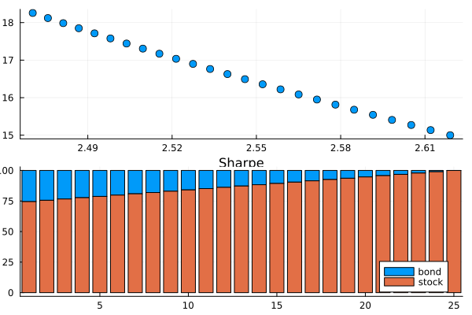

Functions
PortfolioAnalytics.ReturnPortfolioAnalytics.VaRPortfolioAnalytics.esPortfolioAnalytics.mean_returnPortfolioAnalytics.momentsPortfolioAnalytics.portfolio_optimizePortfolioAnalytics.portfolio_returnPortfolioAnalytics.sharpePortfolioAnalytics.stddev
using PortfolioAnalytics
using Dates
using TSFrames
dates = Date(2020, 12, 31):Month(1):Date(2021, 12, 31)
TSLA = [235.22,264.51,225.16,222.64,236.48,208.40,226.56,229.06,245.24,258.49,371.33,381.58,352.26]
NFLX = [540.73,532.39,538.85,521.66,513.47,502.81,528.21,517.57,569.19,610.34,690.31,641.90,602.44]
MSFT = [222.42,231.96,232.38,235.77,252.18,249.68,270.90,284.91,301.88,281.92,331.62,330.59,336.32]
prices_ts = TSFrame([TSLA NFLX MSFT], dates, colnames=[:TSLA, :NFLX, :MSFT])
13×3 TSFrame with Date Index
Index TSLA NFLX MSFT
Date Float64 Float64 Float64
───────────────────────────────────────
2020-12-31 235.22 540.73 222.42
2021-01-31 264.51 532.39 231.96
2021-02-28 225.16 538.85 232.38
2021-03-31 222.64 521.66 235.77
2021-04-30 236.48 513.47 252.18
2021-05-31 208.4 502.81 249.68
2021-06-30 226.56 528.21 270.9
2021-07-31 229.06 517.57 284.91
2021-08-31 245.24 569.19 301.88
2021-09-30 258.49 610.34 281.92
2021-10-31 371.33 690.31 331.62
2021-11-30 381.58 641.9 330.59
2021-12-31 352.26 602.44 336.32
weights = [0.4, 0.4, 0.2]
3-element Vector{Float64}:
0.4
0.4
0.2PortfolioAnalytics.Return — FunctionReturn(price::TSFrame, period::Int=1; method::String="simple")Calculates returns form asset prices.
Arguments:
price::TSFrame: column(s) of TSFrame object of asset pricesperiod::Int=1: return periodmethod::String="simple": return method, available methods;"simple"and"log"
Example
julia> returns = Return(prices_ts)
12×3 TSFrame with Date Index
Index TSLA NFLX MSFT
Date Float64? Float64? Float64?
─────────────────────────────────────────────────
2021-01-31 0.124522 -0.0154236 0.0428918
2021-02-28 -0.148766 0.012134 0.00181066
2021-03-31 -0.011192 -0.0319013 0.0145882
2021-04-30 0.0621631 -0.0156999 0.0696017
2021-05-31 -0.118742 -0.0207607 -0.00991355
2021-06-30 0.0871401 0.0505161 0.0849888
2021-07-31 0.0110346 -0.0201435 0.0517165
2021-08-31 0.0706365 0.0997353 0.0595627
2021-09-30 0.0540287 0.0722957 -0.066119
2021-10-31 0.436535 0.131025 0.176291
2021-11-30 0.0276035 -0.0701279 -0.00310596
2021-12-31 -0.0768384 -0.0614737 0.0173326
julia> log_returns = Return(prices_ts, method = "log")
12×3 TSFrame with Date Index
Index TSLA NFLX MSFT
Date Float64? Float64? Float64?
─────────────────────────────────────────────────
2021-01-31 0.117358 -0.0155438 0.0419975
2021-02-28 -0.161068 0.0120609 0.00180902
2021-03-31 -0.0112551 -0.0324212 0.0144828
2021-04-30 0.0603075 -0.0158244 0.0672864
2021-05-31 -0.126404 -0.0209792 -0.00996302
2021-06-30 0.0835505 0.0492816 0.0815697
2021-07-31 0.0109742 -0.0203492 0.0504236
2021-08-31 0.0682533 0.0950695 0.0578562
2021-09-30 0.0526197 0.0698019 -0.0684062
2021-10-31 0.362234 0.123125 0.162366
2021-11-30 0.0272294 -0.0727082 -0.0031108
2021-12-31 -0.079951 -0.0634445 0.0171842Notes:
missingresulting from the function is automatically removed
PortfolioAnalytics.portfolio_return — Functionportfolio_return(price::TSFrame, weights::Vector{<:Number}; period::Int=1, method::String="simple", colname::String="PORT")Calculates portfolio return from asset prices and given weights.
Arguments:
price::TSFrame: column(s) of TSFrame object of asset pricesweights::Vector{<:Number}: weights of assetsperiod::Int=1: return periodmethod::String="simple": return method, available methods;"simple"and"log"colname::String="PORT": name of the column of portfolio return
Example
julia> preturns = portfolio_return(prices_ts, weights)
12×1 TSFrame with Date Index
Index PORT
Date Float64?
─────────────────────────
2021-01-31 0.0522176
2021-02-28 -0.0542905
2021-03-31 -0.0143197
2021-04-30 0.0325056
2021-05-31 -0.0577836
2021-06-30 0.0720602
2021-07-31 0.00669974
2021-08-31 0.0800613
2021-09-30 0.037306
2021-10-31 0.262282
2021-11-30 -0.017631
2021-12-31 -0.0518583
julia> log_preturns = portfolio_return(prices_ts, weights, method = "log")
12×1 TSFrame with Date Index
Index PORT
Date Float64?
─────────────────────────
2021-01-31 0.0491251
2021-02-28 -0.0592409
2021-03-31 -0.014574
2021-04-30 0.0312505
2021-05-31 -0.060946
2021-06-30 0.0694468
2021-07-31 0.00633473
2021-08-31 0.0769004
2021-09-30 0.0352874
2021-10-31 0.226617
2021-11-30 -0.0188137
2021-12-31 -0.0539213Notes:
missingresulting from the function is automatically removed.
julia> all_returns = TSFrames.join(returns, preturns)
12×4 TSFrame with Date Index
Index TSLA NFLX MSFT PORT
Date Float64? Float64? Float64? Float64?
──────────────────────────────────────────────────────────────
2021-01-31 0.124522 -0.0154236 0.0428918 0.0522176
2021-02-28 -0.148766 0.012134 0.00181066 -0.0542905
2021-03-31 -0.011192 -0.0319013 0.0145882 -0.0143197
2021-04-30 0.0621631 -0.0156999 0.0696017 0.0325056
2021-05-31 -0.118742 -0.0207607 -0.00991355 -0.0577836
2021-06-30 0.0871401 0.0505161 0.0849888 0.0720602
2021-07-31 0.0110346 -0.0201435 0.0517165 0.00669974
2021-08-31 0.0706365 0.0997353 0.0595627 0.0800613
2021-09-30 0.0540287 0.0722957 -0.066119 0.037306
2021-10-31 0.436535 0.131025 0.176291 0.262282
2021-11-30 0.0276035 -0.0701279 -0.00310596 -0.017631
2021-12-31 -0.0768384 -0.0614737 0.0173326 -0.0518583PortfolioAnalytics.sharpe — Functionsharpe(R::TSFrame, Rf::Number=0)Calculates Sharpe Ratio from asset returns. Output is a NamedArray.
Arguments:
R::TSFrame: column(s) of TSFrame object of asset returnsRf::Number=0: Risk-free rate
Example
julia> sharpe = sharpe(all_returns)
4-element Named Vector{Float64}
Sharpe Ratio (Rf=0) │
─────────────────────┼─────────
TSLA │ 0.288602
NFLX │ 0.170242
MSFT │ 0.606824
PORT │ 0.329079PortfolioAnalytics.mean_return — Functionmean_return(R::TSFrame; geometric::Bool = false)Calculates the mean return from asset returns. Output is a NamedArray.
Arguments:
R::TSFrame: column(s) of TSFrame object of asset returnsgeometric::Bool=false: if true, calculates geometric mean
Example
julia> mean_return(all_returns)
4-element Named Vector{Float64}
μ │
─────┼──────────
TSLA │ 0.0431772
NFLX │ 0.010848
MSFT │ 0.0366371
PORT │ 0.0289375
julia> mean_return(all_returns, geometric=true)
4-element Named Vector{Float64}
μ │
─────┼───────────
TSLA │ 0.0342267
NFLX │ 0.00904634
MSFT │ 0.0350585
PORT │ 0.0257348using Plots
# plotting mean return of stocks and portfolio
bar(names(mreturn), mreturn, labels = false)PortfolioAnalytics.stddev — Functionstddev(R::TSFrame)Calculates the standard deviation of asset returns. Output is a NamedArray.
Example
julia> stddev(all_returns)
4-element Named Vector{Float64}
σ │
─────┼──────────
TSLA │ 0.149608
NFLX │ 0.0637211
MSFT │ 0.0603753
PORT │ 0.0879347PortfolioAnalytics.moments — Functionmoments(R::TSFrame)Calculates the (statistical) moments of asset returns. Output is a NamedArray.
Example
julia> pmoments = moments(all_returns)
4×4 Named Matrix{Float64}
Tickers ╲ Moments │ Mean Std Skewness Kurtosis
──────────────────┼───────────────────────────────────────────
TSLA │ 0.0431772 0.149608 1.36882 2.19682
NFLX │ 0.010848 0.0637211 0.604374 -0.808401
MSFT │ 0.0366371 0.0603753 0.681468 0.790701
PORT │ 0.0289375 0.0879347 1.53379 2.19321Output:
NamedArray; rows:tickers, columns:moments
Notes:
Kurtosis:excess kurtosis
PortfolioAnalytics.VaR — FunctionVaR(R::TSFrame, p::Number=0.95; method::String="historical")Calculates Value-at-Risk(VaR) from asset returns. Output is a NamedArray.
Arguments:
R::TSFrame: column(s) of TSFrame object of asset returnsp::Number=0.95: confidence levelmethod::String="historical": method of VaR calculation, available methods;"historical"and"parametric"
Example
julia> var_historical = VaR(all_returns)
4-element Named Vector{Float64}
95% historical VaR │
────────────────────┼───────────
TSLA │ -0.132252
NFLX │ -0.0653681
MSFT │ -0.035206
PORT │ -0.0558624
julia> var_parametric = VaR(all_returns, 0.90, method = "parametric")
4-element Named Vector{Float64}
90% parametric VaR │
────────────────────┼───────────
TSLA │ -0.148553
NFLX │ -0.0708139
MSFT │ -0.0407369
PORT │ -0.0837553PortfolioAnalytics.es — Functiones(R::TSFrame, p::Number=0.95; method::String="historical")Calculates Expected Shortfall (Conditional Value at Risk) from asset returns. Output is a NamedArray.
Arguments:
R::TSFrame: column(s) of TSFrame object of asset returnsp::Number=0.95: confidence levelmethod::String="historical": method of Expected Shortfall calculation
Example
julia> ES = es(all_returns)
4-element Named Vector{Any}
95% historical ES │
───────────────────┼───────────
TSLA │ -0.148766
NFLX │ -0.0701279
MSFT │ -0.066119
PORT │ -0.0577836Notes:
- Available methods:
"historical"and"parametric" - Monte Carlo method will be implemented as part of the next release
PortfolioAnalytics.portfolio_optimize — Functionportfolio_optimize(R::TSFrame, objective::String = "minumum variance"; target = Nothing, Rf::Number = 0)Calculates the optimal Portfolio weights for a given objective and target return.
Arguments:
R::TSFrame: columns of TSFrame object of asset returnsobjective::String = "minumum variance": portfolio objective, minimizes the standard deviation for the portfolio. Available objecives;"minumum variance"and"maximum sharpe"target = Nothing: target portfolio mean return for a chosen objective. It allows to move accross the efficient frontierRf::Number = 0: risk-free rate, used withmaximum sharpe
Example
julia> opt1 = portfolio_optimize(returns, "minumum variance")
julia> opt_weights = opt1.pweights
3-element Named Vector{Float64}
Optimal Weights │
─────────────────┼───────
TSLA │ -0.0
NFLX │ 0.4438
MSFT │ 0.5562
# plotting efficient frontier and decision space
julia> opt1.pltOptimize minumum-variance portfolio with a minumum return target of 4%
julia> opt2 = portfolio_optimize(returns, "minumum variance", target = 0.04)
# optimal portfolio weights for a chosen objective and target return
julia> opt2.pweights
3-element Named Vector{Float64}
Optimal Weights │
─────────────────┼───────
TSLA │ 0.5142
NFLX │ 0.0
MSFT │ 0.4858Optimization of maximum sharpe portfolio
julia> opt3 = portfolio_optimize(returns, "maximum sharpe")
julia> opt3.pweights
3-element Named Vector{Float64}
Optimal Weights │
─────────────────┼─────
TSLA │ -0.0
NFLX │ 0.0
MSFT │ 1.0
julia> opt3.pltOptimization of maximum sharpe portfolio with target return of at least 4%
julia> opt4 = portfolio_optimize(returns, "maximum sharpe", target = 0.04)
julia> opt4.pweights
3-element Named Vector{Float64}
Optimal Weights │
─────────────────┼───────
TSLA │ 0.5142
NFLX │ -0.0
MSFT │ 0.4858Output:
Named Tuple
- 1,
preturn: portfolio mean return - 2,
prisk: portfolio standard deviation - 3,
psharpe: portfolio sharpe ratio - 4,
pweights: optimal portfolio weights for chosenobjectiveand definedtarget - 5,
plt: plot of theefficient frontieranddecision space - 6,
pm: list ofexpected returnsper each solution - 7,
po: list of objective values per portfolio. If the objective isminimum-variance, then standard deviations of each optimal portfolio. If the objective is set to themaximum-sharpe, then the Sharpe Ratios of each portfolio. - 8,
pw: list ofweightsper each solution
Example
bond = [0.06276629, 0.03958098, 0.08456482,0.02759821,0.09584956,0.06363253,0.02874502,0.02707264,0.08776449,0.02950032]
stock = [0.1759782,0.20386651,0.21993588,0.3090001,0.17365969,0.10465274,0.07888138,0.13220847,0.28409742,0.14343067]
R = TSFrame([bond stock], colnames = [:bond, :stock])Minumum variance portfolio.
opt = portfolio_optimize(R, "minumum variance")
opt.pweights2-element Named Vector{Float64}
Optimal Weights │
─────────────────┼───────
bond │ 0.9463
stock │ 0.0537Minumum variance portfolio with 10% target return.
opt1 = portfolio_optimize(R, "minumum variance", target = 0.1)
opt1.pltqt.qpa.xcb: could not connect to display
qt.qpa.plugin: Could not load the Qt platform plugin "xcb" in "" even though it was found.
This application failed to start because no Qt platform plugin could be initialized. Reinstalling the application may fix this problem.
Available platform plugins are: linuxfb, minimal, offscreen, vnc, xcb.
Aborted (core dumped)
connect: Connection refused
GKS: can't connect to GKS socket application
GKS: Open failed in routine OPEN_WS
GKS: GKS not in proper state. GKS must be either in the state WSOP or WSAC in routine ACTIVATE_WS
Maximum Sharpe portfolio with 15% target return.
opt2 = portfolio_optimize(R, "maximum sharpe", target = 0.15)
opt2.pltqt.qpa.xcb: could not connect to display
qt.qpa.plugin: Could not load the Qt platform plugin "xcb" in "" even though it was found.
This application failed to start because no Qt platform plugin could be initialized. Reinstalling the application may fix this problem.
Available platform plugins are: linuxfb, minimal, offscreen, vnc, xcb.
Aborted (core dumped)
connect: Connection refused
GKS: can't connect to GKS socket application
GKS: Open failed in routine OPEN_WS
GKS: GKS not in proper state. GKS must be either in the state WSOP or WSAC in routine ACTIVATE_WS
using Plots
# plotting optimal weights for maximum sharpe portfolio with 15% return target
bar(names(opt2.pweights), opt2.pweights, labels = false)